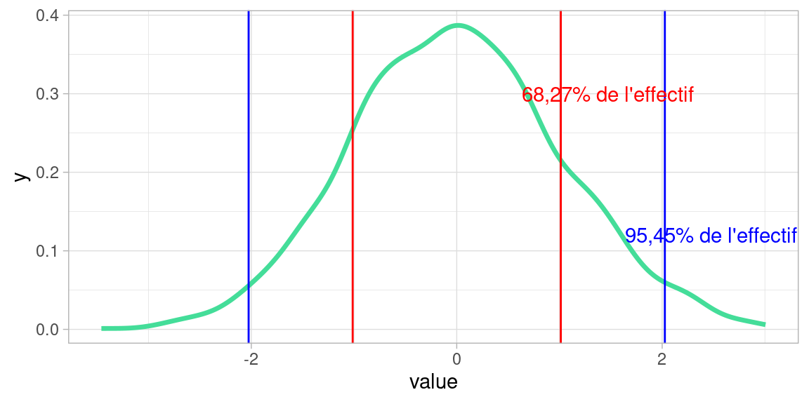

Chapitre 5 La Dispersion
La dispersion désigne la façon dont les valeurs des variables des individus d’une population s’écartent de leur tendance.
Elle est décrite par la variance, l’ écart-type, et le coefficient de variation (varmean).
5.1 La dispersion
Voici un nuage de points formées par deux variables, échantillonnées selon une loi normale \(\mathscr{N}(0,1)\) , de moyenne 0 , et d’écart type 1 (nous allons voir dans un instant ce que signifie l’écart-type)
mydataset <- data.frame(X=rnorm(900), Y=rnorm(900))
plot1 <- ggplot(mydataset)+
geom_point(aes(x=X, y=Y), fill="#44DD99", color="#666666", shape=21)+
coord_equal()+theme_light()
plot1
Dans cet exemple, la dispersion nous servira à mesure à quel point les individus s’écartent de la tendance centrale de \(X\) et de celle de \(Y\), ici le point (0,0).
5.2 Variance et Écart-type
La variance et l’écart-type rendent compte de la dispersion de la variable autour de sa moyenne. On peut les interpréter comme une «quantité moyenne d’écart» entre les valeurs des individus et la valeur moyenne.
Mathématiquement, la variance est définie comme la somme des écarts carrés à la moyenne rapporté à l’effectif
\[ var(X)= \frac{1}{n}\sum_{i=1}^{n}(x_i -\bar{x})^2\]
Avec :
- \(X\) une variable
- \(x_i\) les valeurs de la variables pour les individus de la population
- \(\bar{x}\) la moyenne de \(X\)
- \(n\) l’effectif de la population
L’écart-type (standard deviation in english) est la racine carrée de la variance: \[\sigma_X=\sqrt{var(X)}\]
Conséquences de ces définitions :
- si \(var(X) = 0\) ou \(\sigma_X = 0\) , alors \(X\) est constante (et vaut sa moyenne évidemment)
- Ces deux mesures sensibles aux valeurs extrêmes et toujours positives.
- Un écart-type ou un variance faible indique que les valeurs sont réparties de façon homogène autour de la moyenne.
- Du fait de la racine carrée, l’écart-type permet d’exprimer la dispersion dans les mêmes unités que celles des données, ce que ne permet pas la variance.
5.2.1 Variance et écart type avec R
Les fonctions pour calculer la variance et l’écart-type d’une variable sont var et sd :
## [1] 0.1899794## [1] 0.43586635.2.2 Si la distribution est proche de la Gaussienne
⚠ Variance et écart type n’ont d’intérêt que pour qualifier des distributions unimodales, et (à peu près) symétriques , c’est-à-dire d’une allure proche de la distributions Gaussienne.
Si c’est le cas , alors la valeur de l’écart-type nous rend bien des services :

L’intervalle \([-\sigma;\sigma]\) contient environ \(\frac{2}{3}\) de l’effectif
L’intervalle \([-2\sigma;2\sigma]\) contient environ 95% de l’effectif
Cette façon de «couper» la population en tranches d’une certaine «épaisseur» (i.e. part de la population) est à la base de la mesure suivante : les quantiles
5.3 Quantiles
Nous avons vu que la médiane d’une variable sépare une population en deux classes d’égal effectif selon la valeur de cette variable (quantitative).
Les quantiles séparent une population en \(n\) classes d’égal effectif.
En pratique, toutes les valeurs de \(n\in\mathbb{N}\) ne sont pas utilisées. Les cas les plus courants sont :
- \(n=4\) : les quartiles, qui contiennent 25% de la population
- \(n=10\) : les déciles, qui en contiennent 10%
- plus rarement \(n=100\) : les centiles qui en contiennent 1%
5.3.1 Quartiles
Les quartiles d’une variable \(X\) sont trois valeurs, \(Q_1,Q_2,Q_3\) qui séparent la population en quatre classes d’égal effectif selon leur valeur de la variable :
- 25% des valeurs de \(X\) sont strictement inférieures à \(Q_1\)
- 50% des valeurs de \(X\) sont strictement inférieures à \(Q_2\) (médiane)
- 75% des valeurs de \(X\) sont strictement inférieures à \(Q_3\)
5.3.2 Déciles
Les déciles sont les 9 quantiles \(Q_1,Q_2,\dots,Q_9\) qui séparent une population selon la valeur d’une variable quantitative en 10 classes d’égal effectif.
5.3.3 Écarts inter-quartiles et inter-déciles
Les quantiles permettent de mesurer la dispersion d’une distribution :
l’Écart inter-quartile: \(Q_3-Q_1\) , nous donne l’étendue de 50% des valeurs de la population les plus proches de la médiane,
l’Écart inter-déciile: \(Q_9-Q_1\) , nous donne l’étendue de 80% des valeurs de la population les plus proches de la médiane
5.3.4 Avantages et inconvénient des quantiles
Avantages :
les quantiles sont peu sensibles aux distributions aplaties et aux valeurs extrêmes, (puisque seuls les quantiles des extrémités de l’étendue de la variable sont concernés, et ne perturbent pas les autres)
L’écart inter-quantile est plus robuste que l’écart-type aux valeurs extrêmes (pour cette même raison: les valeurs extrêmes de la variables ne sont pas prises en compte dans son calcul)
Inconvénients :
- leur calcul peut s’avérer délicat pour les variables quantitatives discrètes
- les écarts inter-quantiles négligent l’influence des valeurs extrêmes sur la distribution, entraînant un risque de “passer à côté” d’individus ou évènements critiques.
- Les écarts inter-quantiles sont partiaux : l’écart inter-quartile néglige 50% de la population !
5.3.5 Les boîtes à moustaches (boxplots) avec R
Les boxplots , ou boîtes à moustaches sont la représentation courante de la dispersion d’une variable à l’aide de quartiles.
Voici comment obtenir un boxplot avec R . On prend pour cet exemple le dataset iris, toujours disponible dans une session R.

L’interprétation des formes des boîtes est la suivante:
- La marque centrale de la boîte est la médiane
- Les bords de la boîte sont les quartiles \(Q_1\) et \(Q_3\)
- Les extrémités des moustaches vont jusqu’à la plus grande (resp. la plus petite ) valeur inférieure (resp. supérieure) à 1.5 fois l’écart interquartile
- Les valeurs qui dépassent les moustaches sont affichées sous formes de points
Voici un exemple de boxplots obtenus avec le package ggplot2

On peut voir un boxplot comme un résumé de distribution “vue du dessus”, comme dans l’exemple ci-dessous où sont alignés (à quelques pixels près) un histogramme et un boxplot de la même variable:

5.4 Le coefficient de variation
Le coefficient de variation (\(CV\)) est une autre mesure de dispersion.
C’est le ratio entre l’écart-type \(\sigma_x\) et la moyenne \(\bar{x}\) d’une variable quantitative \(X\).
\[\displaystyle CV(X)=\frac{\sigma_x}{\bar{x}}\]
Plus il est important , plus la dispersion est grande. Plus il est proche de 0, plus les données sont homogènes.
Il souffre des mêmes inconvénients que la moyenne et l’écart-type : il est sensible aux valeurs extrêmes.
Comme l’écart type est une sorte de “quantité d’écart à la moyenne”, il est parfois difficile d’interpréter directement sa valeur numérique, qui dépend des unités de la variables. Ici pour le \(CV\) le fait de diviser par la moyenne normalise en quelque sorte cette mesure et permet d’avoir une mesure un peu plus absolue de la dispersion de la variable, quelle que soit son unité et son intervalle de valeurs.
5.5 Comparer les dispersions de deux distributions.
Interpréter la dispersion d’une seule variable est un exercice un peu vain: tenter de décider si la dispersion des valeurs d’une variable d’une population autour de sa moyenne est «notable» n’a pas beaucoup de sens si nous n’avons pas une valeur de référence qui nous permette de qualifier la dispersion calculée par comparaison. Or, il n’existe pas de telle valeur de référence. Nous ne pouvons pas donner de règle générale de la forme «si l’écart type \(\sigma_{tutu}>5\) , vous avez un problème !»
En revanche il est beaucoup plus aisé et pertinent de comparer la dispersion d’une variable avec celle d’une autre.
Prenons un exemple :
Deux communes, A et B, versent des aides aux associations locales.
| moyenne | écart-type | |
|---|---|---|
| Commune A | 390€ | \(\sigma_A = 30\) |
| Commune B | 152€ | \(\sigma_B = 8\) |
Pour quelle commune les aides sont les plus homogènes?
Le calcul du coefficient de variation nous donne la réponse :
\(CV_A=\frac{\sigma_A}{\bar{x_A}}=0.07692\)
\(CV_B=\frac{\sigma_B}{\bar{x_B}}=0.052631\)
La commune A dispense des aides moins homogènes que la commune B.
Ce n’est pas le cas dans cet exemple, mais on pourrait tout aussi bien comparer des distribution de variables qui n’ont rien à voir, exprimées dans des unités différentes.
5.5.1 Comparaison visuelle de deux distributions
Si nous avions des données réelles, nous aurions pu (et même dû, puisque c’est la première chose à faire) répondre également par comparaison visuelle des distributions de la variable.
Pour avoir des données à tracer, j’ai échantillonné 1000 individus (c’est beaucoup pour un nombre d’association, mais ça permet d’avoir des distributions graphiquement plus lisses) selon des lois normales aux caractéristiques (moyenne et écart type) des communes.
Voici ce que donne une visualisation des deux distributions:
A <- rnorm(n = 1000, mean = 390, sd = 30)
B <- rnorm(n = 1000, mean = 152, sd = 8)
par(mfrow=c(1, 2)) #2 graphes en colonnes
hist(A, probability = T)
lines(density(A), col="red")
hist(B, probability = T)
lines(density(B), col="red")
Un paradoxe ne manque pas de nous sauter au visage : les distributions ont la même allure, alors que leur coefficient de variations sont différents.
Pourquoi?
(le suspense est beaucoup moins insoutenable que dans les diapositives…)
… Parce que pour comparer visuellement la dispersion de deux variables, il faut une échelle commune !
A <- rnorm(n = 1000, mean = 390, sd = 30)
B <- rnorm(n = 1000, mean = 152, sd = 8)
par(mfrow=c(1, 2))
hist(A, probability = T, xlim = c(50,600), ylim = c(0,0.05))
lines(density(A), col="red")
hist(B, probability = T,xlim = c(50,600), ylim = c(0,0.05))
lines(density(B), col="red")
On retrouve alors que la distribution de la commune B est beaucoup plus piquée que la distribution de la commune A : les valeurs sont resserrées autour de la moyenne et s’en écartent peu, en tout cas beaucoup moins que dans la distribution de la commune A. Les aides de la commune B sont donc plus homogènes.